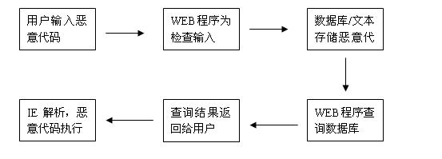

==Ph4nt0m Security Team==
Issue 0x02, Phile #0x07 of 0x0A
|=---------------------------------------------------------------------------=|
|=-------------------------=[ 乱谈之XSS攻击检测 ]=---------------------------=|
|=---------------------------------------------------------------------------=|
|=---------------------------------------------------------------------------=|
|=----------------------=[ By Xy7 ]=----------------------=|
|=--------------------=[ <xuanmumu_at_gmail.com> ]=--------------------=|
|=---------------------------------------------------------------------------=|
前言：
所谓乱谈，不是科普，不是分析。具体关于XSS攻击的基础知识感兴趣的可以在网上一搜
一大堆出来，比如：百度科普。本文只是站在一个防御者的角度，探讨作为第三方程序防御XSS
攻击过程中出现的一些困难，思路无章，可谓杂文。
一、B/S结构下的HTML标签XSS
这是最普通的一类跨站攻击了，也就是平常经常被人说到的那一类，具体漏洞成因可以
用如下一个过程来表示：

当一个恶意用户在没有过滤的地方提交<script>alert("80sec")</script>,这样在有
其他用户浏览的情况下，这段代码就会在其他用户的IE中被执行。当然这只是最基本的一种
测试方法，如果XSS只是弹框框而已，那就没什么说道的了，防御这种攻击过滤HTML标签就可
以了。但是还有那么多标签的事件呢？CSS的属性，各种编码…要写这么一个全面的过滤危险
字符的检测函数实在不是一件简单的工作，而且效果肯定也不是很完美。最好的防御方式最
好还是仔细的检查WEB应用程序代码，限制用户的输入。不过这样在现实中可能并不能行的
通，因为不是每个WEB程序的使用者都有阅读代码的能力或者WEB安全意识，此类站点出现XSS
漏洞见怪不怪，而稍微有点财力的站点或者企业都希望能有一批专业人员来帮助他们修补漏
洞，提升WEB程序的安全性，这样就给很多提供WEB检测服务的组织或厂商带来了商机，而更现
实的是服务并没有产品卖钱，所以小公司卖服务，大公司推产品，产品的过滤自然有考虑不周
的地方，服务也不能保证尽善尽美，所以安全等级参差不齐。在如今WEB安全日益被提上高度
的同时，XSS攻击依然风风火火也就不足为奇了。
二、UBB标签的XSS
在各大论坛或者BLOG程序中对UBB标签的使用已经是非常成熟了。UBB提供了有限的标
签可供使用，本身可以说已经设置了一道过滤。常见的UBB转换代码如下：
<?
function ubb($text) {
$text=trim($text);
$Text=ereg_replace("\n","<br>",$Text);
$Text=preg_replace("/\\t/is"," ",$Text);
$Text=preg_replace("/\[h1\](.+?)\[\/h1\]/is","<h1>\\1</h1>",$Text);
$Text=preg_replace("/\[h2\](.+?)\[\/h2\]/is","<h2>\\1</h2>",$Text);
$Text=preg_replace("/\[h3\](.+?)\[\/h3\]/is","<h3>\\1</h3>",$Text);
$Text=preg_replace("/\[h4\](.+?)\[\/h4\]/is","<h4>\\1</h4>",$Text);
$Text=preg_replace("/\[h5\](.+?)\[\/h5\]/is","<h5>\\1</h5>",$Text);
$Text=preg_replace("/\[h6\](.+?)\[\/h6\]/is","<h6>\\1</h6>",$Text);
$Text=preg_replace("/\[center\](.+?)\[\/center\]/is","<center>\\1</center>",$Text);
$Text=preg_replace("/\[url\](http:\/\/.+?)\[\/url\]/is","<a href=\\1>\\1</a>",$Text);
$Text=preg_replace("/\[url\](.+?)\[\/url\]/is","<a href=\"http://\\1\">http://\\1</a>",$Text);
$Text=preg_replace("/\[url=(http:\/\/.+?)\](.*)\[\/url\]/is","<a href=\\1>\\2</a>",$Text);
$Text=preg_replace("/\[url=(.+?)\](.*)\[\/url\]/is","<a href=http://\\1>\\2</a>",$Text);
$Text=preg_replace("/\[img\](.+?)\[\/img\]/is","<img src=\\1>",$Text);
$Text=preg_replace("/\[color=(.+?)\](.+?)\[\/color\]/is","<font color=\\1>\\2</font>",$Text);
$Text=preg_replace("/\[size=(.+?)\](.+?)\[\/size\]/is","<font size=\\1>\\2</font>",$Text);
….
Return $text;
?>
由于UBB代码没有对接受的变量进行必要的过滤，针对该漏洞代码的利用也很简单，提交
类似的代码[img]javascript :alert();[/img]，代入程序中会被转义成<img src="javascript:alert();">
就形成了所谓的UBB跨站。从利用角度看没什么好说的，但是从防守角度看呢？抛开检查程序
代码这类服务不说，但从标签分析检测来看，[img]这类标签就足以绕过标签检测机制了。由
于UBB代码并不存在于所有的WEB程序中，要想通过一种通用的第三方程序来检测这类跨站攻
击，首先就是要在第三方程序引擎内部实现一个UBB代码的编码还原，先把UBB代码还原成HTML
标签，然后再匹配可能形成攻击的XSSpayload，这样一来就有一部分性能要花在还原标签上，
而且是不考虑所在WEB应用程序的，如果该WEB程序没有UBB代码，那么这一部分性能就白白浪
费了…
那么换一种方法呢？采用学习+模型的检测机制，首先通过一段时间的学习，使得第三方
检测程序能够熟悉被护WEB程序的数据流，建立正常数据流模型，如果该模型中没有出现UBB
代码则采用普通的检测机制，否则就加载UBB还原代码。这样看似是一种智能的检测分析机
制，实际上使得产品的检测代码更加复杂再加上维护和分析模型的成本，造成成功检测比成
功利用攻击要困难的多。仅仅是一个UBB代码的出现就使得XSS检测机制不得不增加很大的
工作量去分析，而实际利用其实并无太大差异，真是道高一尺，魔高一丈啊！
三、POST表单XSS
POST跨站也是一种比较常见的跨站方法了，漏洞成因上没什么好分析的，关键是from表
单的一个属性可能给第三方检测XSS的产品带来一块绊脚石，这种问题一般的XSS攻击者是从
来不会考虑的吧，呵呵。这两个表单属性就是：
multipart/form-data和application/x-www-form-urlencoded。
先看x-www-form-urlencoded属性，FROM表单的enctype属性指定了表单数据向服务器提
交时所采用的编码类型，默认的属性值是“application/x-www-form-urlencoded”，当攻击者
POST一句<script>alert(document.cookie)</script>到服务器的时候，抓包看一下传输的
格式如下：
HTTP - Hyper Text Transfer Protocol
HTTP Command: POST
URI: /xblog/insert.php
HTTP Version: HTTP/1.1<CR><LF>
Accept: image/gif, image/x-xbitmap, image/jpeg, image/pjpeg, application/x-shockwave-flash, application/vnd.ms-excel, application/vnd.ms-powerpoint, application/msword, */*<CR><LF>
Referer: http://192.168.13.216/xblog/creatnew.php?id=4<CR><LF>
Accept-Language: zh-cn<CR><LF>
Content-Type: application/x-www-form-urlencoded<CR><LF>
Accept-Encoding: gzip, deflate<CR><LF>
User-Agent: Mozilla/4.0 (compatible; MSIE 6.0; Windows NT 5.1; SV1; .NET CLR 1.1.4322)<CR><LF>
Host: 192.168.13.216<CR><LF>
Content-Length: 105<CR><LF>
Connection: Keep-Alive<CR><LF>
Cache-Control: no-cache<CR><LF><CR><LF>
Line 1: id=4&author=%D0%FD%C4%BE%C4%BE&title=eee&content=111%3Cscript%3Ealert%28document
Line .cookie%29%3C%2Fscript%3E
FCS - Frame Check Sequence
FCS: 0x89D1A7DB Calculated
可以看到，提交的字符在POST数据包中是以URL编码的方式传输的。当检测这种POST的
时候可以通过“&”字符分割各个变量，再通过“=”分割变量和变量的值。最后形成这么一个集
合检测规则：
| 变量 |
值 |
Xsspayload检测 |
检测结果 |
| id |
4 |
Check(4) |
正常 |
| author |
%D0%FD%C4%BE%C4%BE |
check(urldecode(%D0%FD%C4%BE%C4%BE)) |
正常 |
| title |
eee |
Check(eee) |
正常 |
| content |
111%3Cscript%3Ealert%28document.cookie%29%3C%2Fscript%3E |
check(urldecode(111%3Cscript%3Ealert%28document.cookie%29%3C%2Fscript%3E)) |
报警 |
用程序实现这么一个检测功能并不复杂，关键还是要看xsspayload的检测规则。但是对
比这两个属性的问题并不在检测规则这里。当表单属性为application/x-www-form-urlencoded
的时候可以很方便的定位XSS语句出现的位置，因为之前的协议变量是固定的。但是接下来
看一下表单属性为multipart/form-data的时候POST包的格式：
HTTP - Hyper Text Transfer Protocol
HTTP Command: POST
URI: /sql1/post.php
HTTP Version: HTTP/1.1<CR><LF>
Accept: image/gif, image/x-xbitmap, image/jpeg, image/pjpeg, application/x-shockwave-flash, application/vnd.ms-excel, application/vnd.ms-powerpoint, application/msword, */*<CR><LF>
Referer: http://192.168.13.216/sql1/post.php<CR><LF>
Accept-Language: zh-cn<CR><LF>
Content-Type: multipart/form-data; boundary=---------------------------7d822d8550650<CR><LF>
Accept-Encoding: gzip, deflate<CR><LF>
User-Agent: Mozilla/4.0 (compatible; MSIE 6.0; Windows NT 5.1; SV1; .NET CLR 1.1.4322)<CR><LF>
Host: 192.168.13.216<CR><LF>
Content-Length: 384<CR><LF>
Connection: Keep-Alive<CR><LF>
Cache-Control: no-cache<CR><LF><CR><LF>
Line 1: -----------------------------7d822d8550650<CR><LF>
Line 2: Content-Disposition: form-data; name="action"<CR><LF><CR><LF>
Line 3: post<CR><LF>
Line 4: -----------------------------7d822d8550650<CR><LF>
Line 5: Content-Disposition: form-data; name="username"<CR><LF><CR><LF>
Line 6: 333<CR><LF>
Line 7: -----------------------------7d822d8550650<CR><LF>
Line 8: Content-Disposition: form-data; name="pagetext"<CR><LF><CR><LF>
Line 9: 333<script>alert(document.cookie)</script><CR><LF>
Line 10: -----------------------------7d822d8550650--<CR><LF>
FCS - Frame Check Sequence
FCS: 0xAE3B0D65 Calculated
可以看到在向服务器发送大量的文本、包含非ASCII字符的文本或二进制数据时这种编
码方式效率很低。在文件上载时，所使用的编码类型应当是“multipart/form-data”，它既可
以发送文本数据，也支持二进制数据上载。这样一来就没办法通过分隔符来提取各个变量的
值了，只能通过分割线来分隔各个数据段。写到这里我就想到了市面上的一些WEB防火墙，基
本都是通过代理的方式，把真实的保护主机隐藏在后面，所有的数据都要先经过WEB防火墙的
检测。但是基本上WEB防火墙没有什么基于原理的检测机制，都是采用匹配特征的方式，对于
application/x-www-form-urlencoded的表单可能还可以用之前提过的检测规则来进行特征
匹配，可是对于multipart/form-data方式的呢？不光检测之前的特征提取算法需要改进，当
XSS语句出现在大段数据之后呢？遍历一遍整个数据段需要耗费的时间不算，如果是很大的数
据包，那检测预处理的缓冲区是否能接受这么多的待检测数据？
乱谈续一、phpinfo()函数跨站
提到这个函数是为了说明两个问题：
1.跨站不仅仅是出现在WEB应用程序中。
2.提高漏洞的利用难度也是一种积极的防御。
SE大牛在MOPB-08-2007中提到了phpinfo()函数存在一个XSS漏洞，影响版本是4.4.3到
4.4.6。测试方法为：http://localhost/phpinfo.php?a[]=<script>alert(/XSS/);</script>。
低版本的PHP对用户输入的变量没有转义就打印出来，造成了一个XSS漏洞。其实这个漏
洞没有什么好利用的，但是说明了XSS漏洞不仅仅是存在于WEB应用程序中。Phpinfo()函数
是PHP内部实现的一个函数，用来打印当前有关PHP及环境变量的一些信息，跨站无处不在啊~
现在看看高版本的PHP是如何fixed这个漏洞的：）
file: standard/info.c
--630-636---
php_print_gpcse_array("_REQUEST", sizeof("_REQUEST")-1 TSRMLS_CC);
php_print_gpcse_array("_GET", sizeof("_GET")-1 TSRMLS_CC);
php_print_gpcse_array("_POST", sizeof("_POST")-1 TSRMLS_CC);
php_print_gpcse_array("_FILES", sizeof("_FILES")-1 TSRMLS_CC);
php_print_gpcse_array("_COOKIE", sizeof("_COOKIE")-1 TSRMLS_CC);
php_print_gpcse_array("_SERVER", sizeof("_SERVER")-1 TSRMLS_CC);
php_print_gpcse_array("_ENV", sizeof("_ENV")-1 TSRMLS_CC);
--630-636---
Function php_print_gpcse_array() for any arrays check 4096b of varible.
file: standard/info.c
--135-154---
if (Z_TYPE_PP(tmp) == IS_ARRAY) {
zval *tmp3;
MAKE_STD_ZVAL(tmp3);
if (!sapi_module.phpinfo_as_text) {
PUTS("<pre>");
}
php_start_ob_buffer(NULL, 4096, 1 TSRMLS_CC);
zend_print_zval_r(*tmp, 0);
php_ob_get_buffer(tmp3 TSRMLS_CC);
php_end_ob_buffer(0, 0 TSRMLS_CC);
elem_esc = php_info_html_esc(Z_STRVAL_P(tmp3) TSRMLS_CC);
PUTS(elem_esc);
efree(elem_esc);
zval_ptr_dtor(&tmp3);
if (!sapi_module.phpinfo_as_text) {
PUTS("</pre>");
}
} else if (Z_TYPE_PP(tmp) != IS_STRING) {
--135-154---
漏洞出现在php_print_gpcse_array函数中，该函数打印出630-636行的各类型的变量，
接着往下看检查参数类型是否为数组，再通过php_start_ob_buffer函数在参数前填充了4096
字节的缓冲区，当攻击者填充完4096字节的缓冲区后，之后的字符将不会被检查，XSS语句可
以在最后得到执行。测试方法:
phpinfo.php?cx[][][][][][][][][][][][][][][][][][][][][][][][][][][][][][][][][][][][][]=[XSS]
phpinfo.php?cx[]=ccccc..~4096chars...ccc[XSS]
看到这里估计没有一个检测产品针对URL预留了大于4096字节的缓冲区吧。PHP针对这
个漏洞的修补方式也挺有意思的。
乱谈续二、Word脚本执行漏洞
按定义说这个漏洞已经不属于XSS范畴了。但是这个漏洞的原因正是因为中间经过XML
的转换。具体漏洞成因也有人分析过了，问题就出在这一段
<w:ocx w:data="DATA:application/x-oleobject;BASE64,rv0krsYD0RGLdgCAx0TziQAAGgAAAGoAYQB2AGEAcwBjAHIAaQBwAHQAOgBhAGwAZQByAHQAKAAn
AFAAcgB1AGUAYgBhACcAKQA=
" w:id="DefaultOcxName" w:name="DefaultOcxName" w:classid="CLSID:AE24FDAE-03C6-11D1-8B76-0080C744F389" w:w="200" w:h="123" wx:iPersistPropertyBag="true"/>
W:data里面是base64过的XSS代码，当word打开时被还原解析执行了。记得好像是前年
chinaunix的blog刚开发出来的时候发现了其中的一个XSS漏洞。用户提交的输入内容都被
存储在XML文件的CDATA部件中，什么是CDATA？在CDATA内部的所有内容都会被解析器忽略，也
就是原样输出。模拟测试代码如下：
<?
echo $form="<form action=\"\" method=\"POST\">
<input type=\"text\" name=title><br>
<textarea name=content cols="40" rows="5"></textarea><br>
<input type=submit value=\"submit\">
</form>";
$title=$_POST["title"];
$content=$_POST["content"];
$data = "<?xml version=\"1.0\" encoding=\"gb2312\"?>\n";
$data.= "<root>\n";
$data.= "<title>".$title."</title>\n";
$data.= "<![CDATA[".$content."]]>\n";
$data.= "</root>\n";
$fp = @fopen ("te.xml", "r+");
@fwrite($fp, $data);
@fclose ($fp);
?>
XML作为数据存储结构十分严谨，如果在XML文档中使用类似"<" 的字符, 那么解析器将
会出现错误，因为解析器会认为这是一个新元素的开始。所以利用起来要先提交]]>来闭合
去CDATA部件。所以现在很多过滤函数都增加了一个对“]]>”字符的过滤规则，不过还是有很
多程序没有仔细检查写入XML里面的内容，这样当一个RSS被引用的时候，所有浏览聚合的用
户都会受到XSS攻击。
乱谈之解决
作为第三方XSS检测程序来说，关键之处必定在于对HTML标签的分析过程。首先要能够
分析出各个标签的内容格式以及相关属性，这是检测XSS的第一步。
前段时间看linux内核的进程调度，从O(1)算法中获得一些启示。首先采用学习的方法
采集被保护WEB服务器一段时间的正常业务数据，建立正常数据模型。接着通过对现有XSS攻
击方法和变形模式的汇总建立一个数组类型的攻击模型。前期通过比较着正常模型和攻击
模型来确定是否存在误报的可能，最终形成一个XSSpayload检测的攻击模型。当有正常业务
数据流来临时，先进行编码还原，再与攻击模型中的特征进行匹配。如果有匹配成功的则报
警。如果有类似属性但属性内容与XSSpayload不匹配的情况，则存入一个数组类型的预留模
型，这一步也可以当作攻击模型的一个学习过程。之后通过对预留模型中的数据进行分析，
如果包含XSS威胁则直接归并入攻击模型中。
由于XSS攻击环境多变，利用方式多变，所以个人认为想通过彻底的研究实现一步解决几
乎是一个不可能的任务，学习过程再所难免。
当然，以上只是个人观点，疏漏之处在所难免，还往大家多多交流，指出错误！
尾声
在此要感谢活跃在WEB安全圈子里的跨站师们，从你们的公开文章或者技巧中让我学到
了很多。在WEB2.0的时代，想必XSS的攻击大势已经来临：）
P.S.：欢迎访问80sec，http://www.80sec.com。
-EOF-